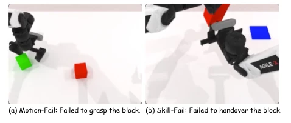
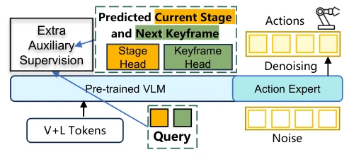
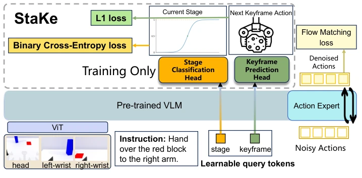
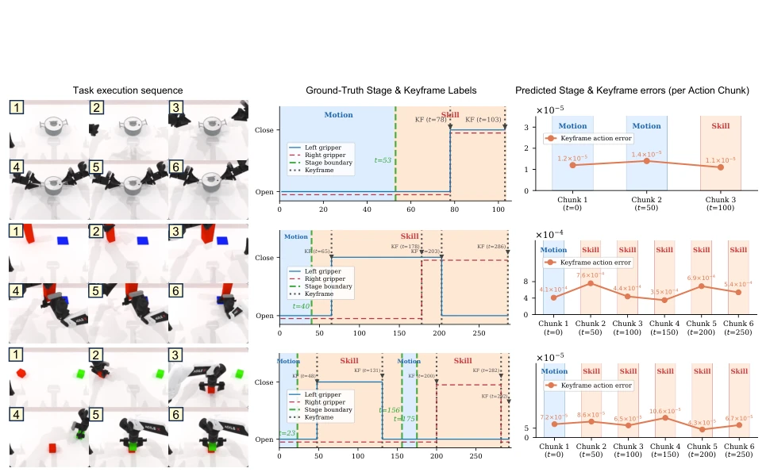
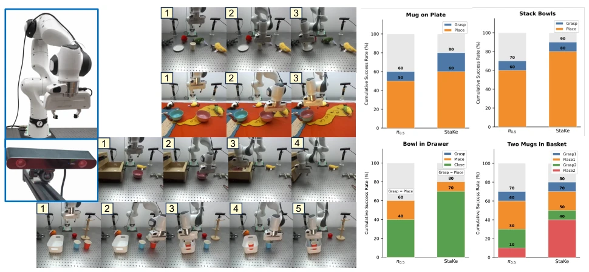

This paper adds an "add-on" to VLA fine-tuning. StaKe does not touch the backbone network, only adding two small heads, specifically designed to address the transition periods of "failing to grasp" and "failing to place well". This strategy of "borrowing strength to strike" is indeed clever, utilizing gripper states as implicit signals and avoiding tedious annotation. However, this also means it is a "gripper dependency syndrome" patient; once removed from grasping scenarios, this logic becomes invalid. It counts as adding a "landmark" to long-horizon tasks, but the landmark itself is drawn based on gripper states, having a bit of a "self-fulfilling prophecy" flavor. Nevertheless, improving success rates without increasing inference costs makes this trade-off quite worthwhile. Additionally, it demonstrates that structured supervision is more effective than uniform loss, but its generalizability remains questionable if it cannot be extended to non-gripper operations in the future.
Existing VLA models such as π0 [11], π0.5 [12] typically use uniform action loss during fine-tuning, ignoring the structured characteristics of manipulation trajectories. As shown in Figure 1, failures often concentrate at key nodes of gripper state transitions, manifesting as motion failures or skill failures. Existing methods [13] have optimized decoding or parameters, but have not explicitly encoded phase structure. This leads to the policy needing to discover structure on its own, which is inefficient and prone to accumulating errors in long-horizon tasks. Furthermore, traditional keyframe methods mostly rely on manual annotation or specific architectures, lacking generalizability. Therefore, a method is needed that can automatically extract structured supervision from demonstrations without affecting inference, to solve the phase recognition challenge in long-horizon manipulation.

Fig. 1: Manipulation failures concentrate around gripper-state transi- tions. A motion-fail occurs when the robot fails to reach and grasp the target during free-space motion, while a skill-fail occurs when the robot grasps successfully but fails during post-grasp skill execution (e.g., handover, stacking, rotation).
The StaKe framework includes automatic label extraction and auxiliary training heads. First, phase labels (motion/skill) and keyframe targets (joint actions at the next gripper transition) are automatically extracted from the gripper states of demonstration data, without manual annotation. In terms of model architecture, two learnable query tokens are appended after the VLM backbone, connected to the phase classification head and keyframe prediction head respectively. During training, the Flow Matching main loss and auxiliary BCE and L1 losses are jointly optimized, with fixed weights. During inference, the auxiliary heads are not enabled, keeping the original policy unchanged. This design utilizes prior structure while avoiding compatibility risks brought by architecture modifications. Furthermore, keyframe targets adopt event-driven rather than fixed timesteps, aligning better with physical meaning. Phase labels cover preparation and stabilization stages by extending gripper closed intervals, enhancing robustness.

Fig. 2: Auxiliary supervision introduced by StaKe. Two learnable query tokens and their corresponding heads (highlighted) are added to a VLA model, providing stage classification and keyframe prediction signals during training without altering the action expert or inference loop.

Fig. 3: Overview of the StaKe framework. Two learnable query tokens are appended to the pre-trained VLM backbone, each feeding a lightweight auxiliary head: a stage classification head trained with binary cross-entropy loss and a keyframe prediction head trained with L1 loss. Both heads are active only during training (marked “Training Only”) and jointly optimized with the flow-matching policy loss. At inference time, the query tokens remain in the sequence but the auxiliary heads are not invoked.
Tested on RoboTwin 2.0 simulation and Franka real robot. Baselines include π0.5, DP, ACT, etc. Simulation task success rates improved by an average of 7.4 percentage points, with more significant improvements in long-horizon tasks, such as a 4% improvement in 5-keyframe tasks. Real robot task average success rate rose from 40% to 62.5%. Ablation studies show that both auxiliary losses are indispensable, and keyframe targets outperform fixed timestep targets. Qualitative analysis shows phase prediction accurately tracked operation phases, with low keyframe errors. Demonstrating the effectiveness of structured supervision for long-horizon manipulation. Additionally, experiments verified the sensitivity of hyperparameter K, with K=25 performing best.

Fig. 4: Qualitative analysis (Q3). Three tasks of increasing complexity (rows, top to bottom): Lift Pot (2 KF), Handover Block (4 KF), and Stack Blocks Two (5 KF). Left column: task execution RGB sequence. Middle column: ground-truth dual-arm gripper states with annotated stage boundaries (green dashed) and keyframe positions (gray dotted). Right column: per-action-chunk predicted stage label (bar color: blue = Motion, orange = Skill) and keyframe prediction L1 error (orange line), reported in normalized joint space relative to each joint’s feasible range (< 2π).

Fig. 5: Real-robot experiments (Q4). Upper left: workspace with a Franka Research 3 arm and a front-view ZED 2i camera. Middle: start frame and keyframe snapshots for each task (top to bottom: Mug on Plate, Stack Bowls, Bowl in Drawer, Two Mugs in Basket). Right: cumulative success rate at each keyframe over 10 trials for π0.5 and StaKe.